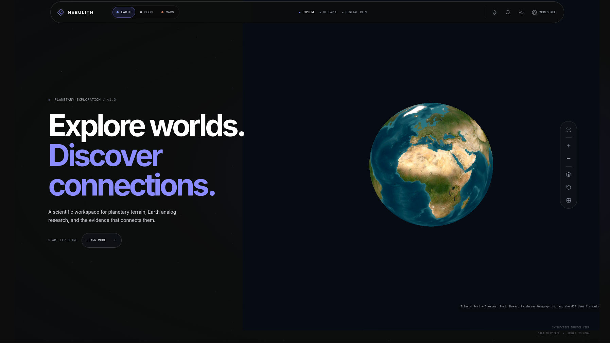

01 IN PROGRESS
NEBULITH
An interactive planetary explorer growing into a research workspace for comparing Earth locations with the Moon and Mars.
Built with React, TypeScript, Three.js, and a FastAPI backend. The globe supports Earth, the Moon, and Mars; research workflows are still being developed, so the project is a foundation rather than a finished scientific tool.

OPEN PROJECT ↗Interactive 3D · Research toolsReact / Three.js / FastAPI